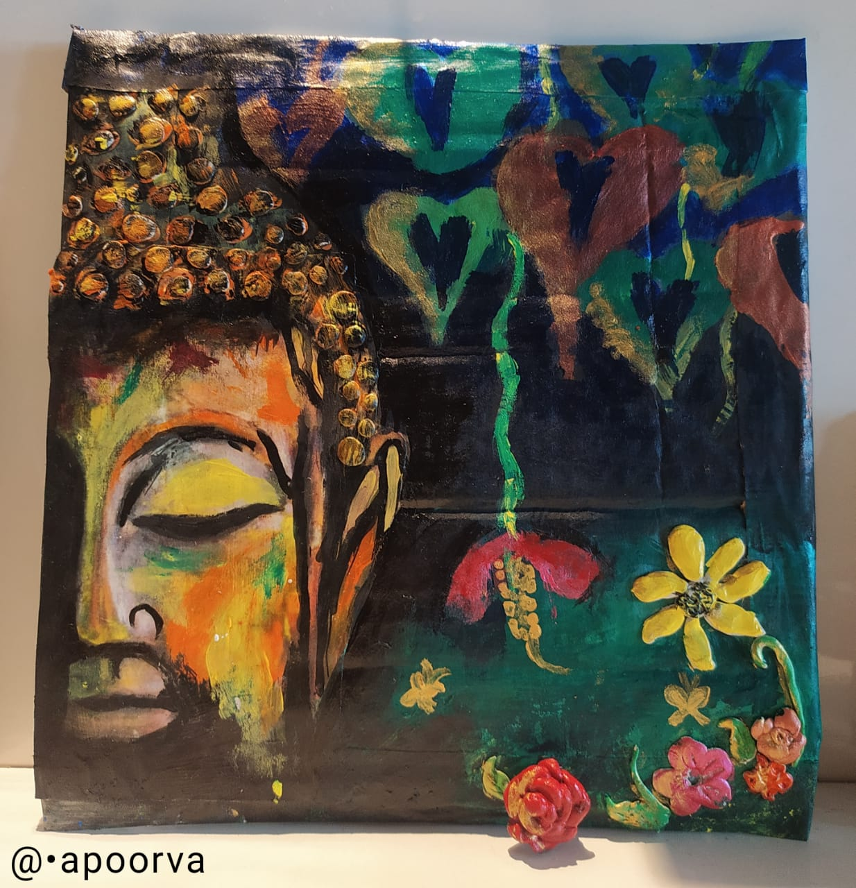
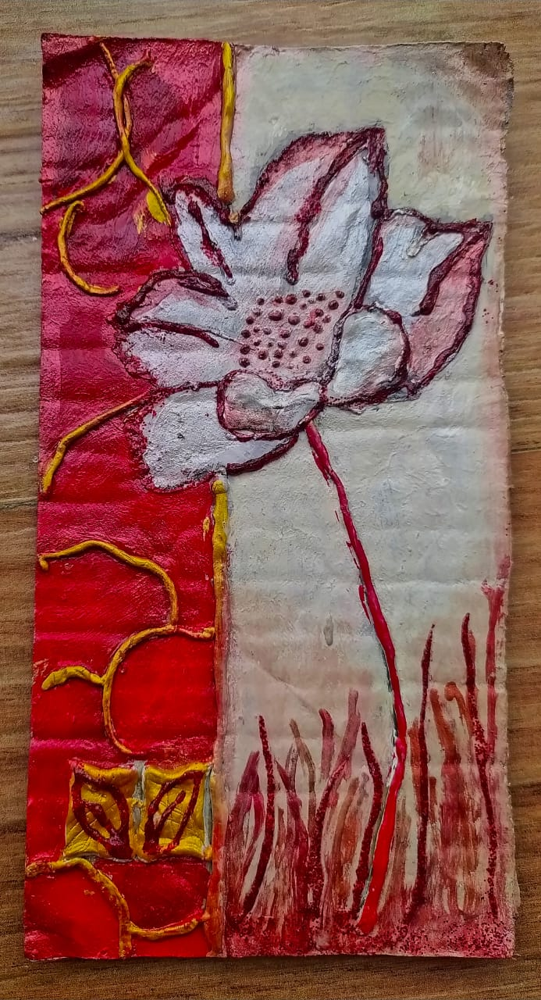

I ❤ Coding!
N
I ❤ Painting

I just ❤ coding but do you know the reason? Coding is just like a sea in which when I keep my feet, its tides just get me flowing!It is lovely!
You know what? Text-based coding is an ocean! Its wonderful❤! I completely enjoy coding. Even though it sometimes get confusing, I always find out that it is my mistake, in the end of the day! That is the exact reason why I chose coding as my favourite hobby!
It's a lovely thing to do anywhere, anytime, but you need the laptopü§£
I just ❤ painting but do you know the reason? Painting is like a connection between the artwork and you, a pathway, a door! It is dashing!
You know what? Acrylic painting is the best! It can be done on canvas, ceramic, thermocol, plastic and steel. It can be done on wood, cloth, cardboard and even paper! Many times I get wrong with it , may it be colour mixing or painting üé®, I can get it solved at the end! That is the reason it is also my favourite hobby!
Thank you
.....
Regards
Apoorva
Rolemodel for Coding

Bill Gates, the founder of Microsoft
Learn More about his coding below
Rolemodel for Painting

Cecily Brown, British Contemporary artist
Learn More about her paintings below
My Paintings and Craftworks!




Coding is a skill where you take instructions (the steps in a task) and translate it into a language the computer understands since computers do not communicate like humans. They communicate in a language called BINARY and it is uses 0's and 1's. Coders write the instructions using a programming language. Most important basic elements for programming languages are: Programming Environment, Data Types, Variables, Keywords, Logical and Arithmetical Operators, If else conditions, Loops, Numbers, Characters and Arrays
Painting, the expression of ideas and emotions, with the creation of certain aesthetic qualities, in a two-dimensional visual language. The elements of this language—its shapes, lines, colours, tones, and textures—are used in various ways to produce sensations of volume, space, movement, and light on a flat surface. This is where the fundamentals of art come into play - color, value, composition, edges, brushwork and technique. These are what I consider to be the core pillars of painting.